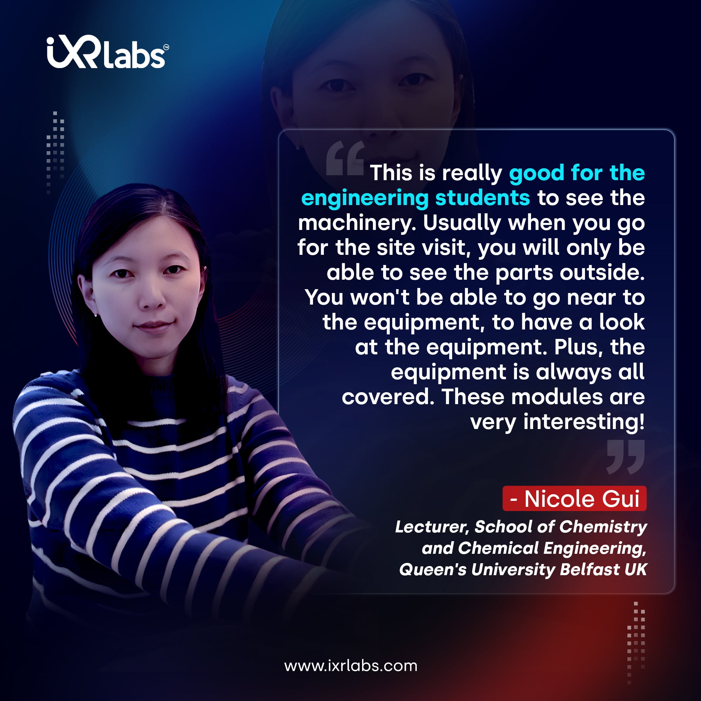
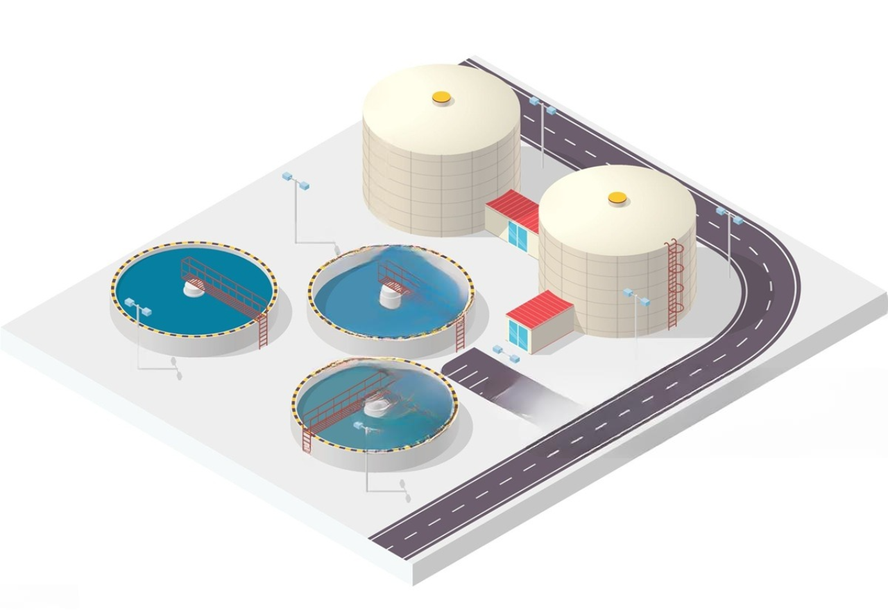
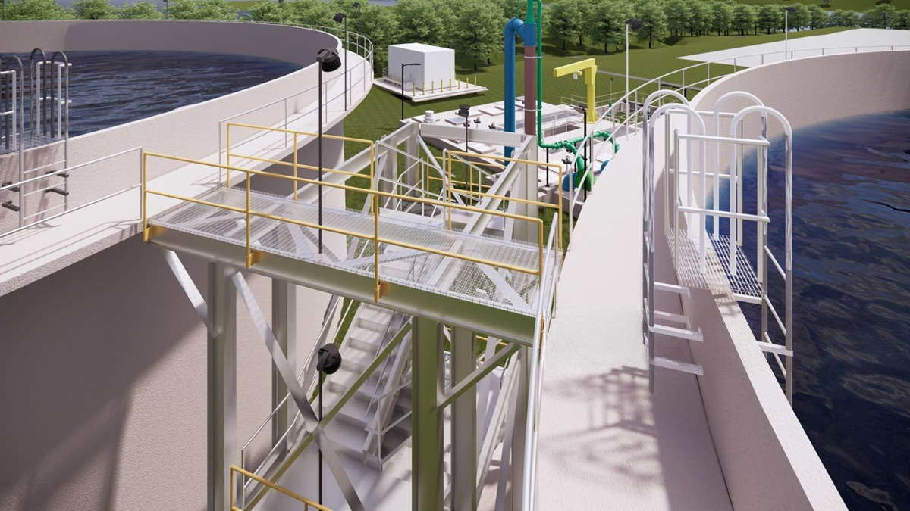

Students have long learned about wastewater treatment through books, lectures, videos, and occasional site visits. These traditional methods are still useful today, but as treatment systems become more complex, they’re often not enough on their own.
Virtual reality adds a powerful, hands-on layer to education by allowing students to explore and interact with treatment processes in a 3D, risk-free environment. It blends easily with modern teaching methods, making it easier to understand complex concepts and turning learning into a more engaging and practical experience.
This article explores how VR is redefining wastewater treatment training in universities, highlighting key benefits, implementation strategies, and the long-term impact for both educators and students.
The Case for VR in Wastewater Treatment Education
Educators in civil engineering often face a recurring challenge: how to teach complex systems in a way that is safe, repeatable, and engaging. Traditional methods fall short when students need to understand machinery operations, biological processes, or emergency protocols.

This is where virtual reality wastewater education steps in. With VR headsets and immersive simulations, students can explore water treatment plants, run machinery, analyze chemical interactions, and respond to emergency scenarios without ever leaving the classroom. This method offers unmatched safety and accessibility.
Immersive Learning That Sticks
Studies show that immersive learning for higher education boosts retention rates by 75% compared to passive learning. In VR, students don’t just read or listen - they interact. This kind of engagement is especially effective for wastewater engineering, where visualizing and manipulating complex systems is key to understanding.
A virtual lab for wastewater treatment provides:
● Hands-on practice in a simulated environment
● Real-time feedback and scoring
● Scalable access for remote learners
● Repeatable modules for better skill development
Benefits for Water and Environmental Engineering Programs in VR
Colleges offering wastewater treatment classes online or in person can now bring real-world experience into the classroom through VR. For students enrolled in water engineering, civil engineering, or environmental science programs, this approach enables:
● Virtual walkthroughs of treatment plants
● Interactive water treatment simulations
● Hands-on learning of modern treatment methods and technologies

This results in better engagement, stronger conceptual understanding, and industry-ready graduates.
Real-World Scenarios Without the Risk
Most wastewater treatment facilities cannot allow unrestricted student access due to safety concerns and operational constraints. Through virtual reality in environmental engineering, universities can simulate scenarios that would otherwise be impossible to experience firsthand.
For example:
● Students can practice response protocols for chemical spills
● Monitor tank levels and manage valves
● Adjust microbial compositions in treatment processes
This level of interactivity helps develop critical thinking and problem-solving skills.
Addressing the Gap in Practical Exposure
Many wastewater treatment classes lack enough hands-on exposure, especially when offered online. Integrating online wastewater engineering training through VR bridges this gap by giving learners the opportunity to explore and operate systems as if they were physically present.
It transforms a passive online course into an active training ground, engaging students in meaningful, skill-building exercises.
VR for Sustainable Development Education
Water management is a pillar of sustainable development, and today’s engineering students must be well-versed in how to balance efficiency with environmental responsibility. VR for sustainable development education allows for:
● Training on energy-efficient water treatment methods
● Simulations of climate-resilient infrastructure
● Emphasis on resource recovery and reuse systems

This aligns with global goals and better prepares students for future challenges.
Implementing VR in University Curricula
Adding VR to teaching wastewater treatment in universities doesn’t mean replacing professors or textbooks. Instead, it complements existing teaching methods, enhancing both theory and practice.
Implementation strategies include:
● Partnering with VR content developers for customized modules
● Setting up a dedicated VR lab space
● Integrating modules into existing wastewater treatment courses
● Offering wastewater treatment courses with hybrid learning formats
Faculty can use VR for lectures, lab sessions, or assignments, and students can revisit modules anytime for revision.
Building Confidence in the Next Generation
The shift toward VR in water management education builds confidence in students by letting them apply their knowledge in controlled, yet realistic scenarios. They can make mistakes, learn from them, and build a deeper understanding of system behavior.
When students graduate having practiced every step of the treatment process, from influent to effluent, they’re far more prepared to contribute meaningfully to the field.
Why Universities Should Act Now
Technology-forward institutions are already setting up VR labs for engineering programs. Investing in virtual reality wastewater education is not just about staying current - it’s about leading from the front.
Universities that adopt VR today will:
● Improve student outcomes and engagement
● Attract tech-savvy students
● Prepare graduates for industry needs
● Stand out as pioneers in modern engineering education
Conclusion
Incorporating wastewater treatment training in VR is no longer a futuristic idea - it’s a practical and impactful way to upgrade how we educate tomorrow’s engineers. For academic institutions focused on excellence, VR is a logical next step.
It’s time to give students more than a lecture. Let them step inside the world they will one day manage. Let’s move beyond lectures & build learning environments that are immersive and truly impactful.
Set up your university’s VR lab today and give your students a chance to experience the systems they’ll one day be trusted to lead.
.jpg)